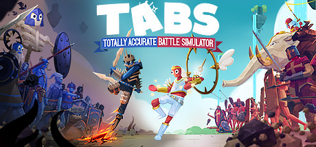

Сторінка2
Мої улюблені комп'ютерні ігри
MINECRAFT

Перше місце MINECRAFT
Minecraft (від англ. Mine craft- «Шахтарський ремесло») - незалежна відеогра студії Mojang 2011 Жанр «пісочниця» у відкритому світі з видом від першої / третьої особи. Гра почала однойменну серію, для всіх творів якої характерний мінімалістичний кубічний дизайн.
Ця гра перш за все дозволяє висловити свою креативність. Розроблено шведським програмістом Маркусом Перссоном, відомим також як «Notch», і в подальшому випускається заснованої Маркусом Перссоном компанією Mojang, що належить Microsoft Studios. Minecraft належить до ігор з широкою аудиторією і є найбільш продаваною відеогрою в історії.
На головну
Друге місце God Of War 4

«God of War» ( «Бог війни»), розроблена компанією Santa Monica Studio і випущена Sony Interactive Entertainment 20 квітня 2018 року винятково на для ігрової консолі PlayStation 4, вона стала восьмою грою в серії. На відміну від попередніх ігор, які були засновані на давньогрецької міфології, ця гра базується на скандинавської міфології. Головними героями є Кратос, колишній грецький бог війни, і його молодий син Атрей. Після смерті другої дружини Кратос і матері Атрея, вони подорожують по світу, щоб виконати для неї обіцянку - розсіяти її прах на самій вершині дев'яти світів. Кратос тримає своє неспокійне минуле в таємниці від Атрея, який не знає про його божественну природу. По дорозі вони зустрічають монстрів і богів нордичного світу.
Креативний керівник студії Корі Барлог, описав гру як переосмислення всієї серії. Ігровий процес заснований на тому, що Кратос використовує чарівну бойова сокира замість його подвійних мечів хаосу. God of War також використовує вільну камеру через плечей персонажа, на відміну від фіксованої кінематографічної камери попередніх частин серії. Гра містить рольові елементи відеоігор, а син Кратос, Атреус надає допомогу в бою. Більшість старої команди розробників гри працювали над новим God of War. Існує текстова відеогра - God of War: A Call from the Wilds, випущена в лютому 2018 року, яка демонструє Атрея в його першій службу.
God of War отримала загальне визнання від критиків. Хвалять її сюжет, дизайн світу, графіку, персонажі і бойову систему. Гра отримала максимальні бали від багатьох рецензентів, що робить її кращою в серії God of War, а також третьої кращою грою для PlayStation 4 на Metacritic. Гра також отримала і комерційний успіх - було продано більше 5000000 копій за перший місяць.
На головну
Третє місце Subnautica

Subnautica - комп'ютерна гра в жанрах пригодницької гри і симулятора виживання з відкритим світом, розроблена інді-студією Unknown Worlds Entertainment. У Subnautica гравець може вільно досліджувати океан іншої планети, керуючи персонажем-одинаком - єдиним, хто вижив під час катастрофи космічного корабля «Аврора»; велика частина дії гри проходить під водою. Гра спочатку була випущена через систему раннього доступу Windows в 2014 році, в подальшому в ранній доступ були випущені версії для macOS і Xbox One. У січні 2018 року побачила остаточна версія гри для персональних комп'ютерів, а для Xbox One і Playstation 4 в грудні 2018.
У серпні 2018 року, Unknown Worlds анонсували самостійне доповнення Subnautica: Below Zero (з англ. - «Нижче нуля»). Доповнення вийшло в ранній доступ 30 січня 2019 року.
На головну
Четверте місце TABS

TABS - гра в жанрі стратегія з ragdoll-фізикою. Була випущена кампанією Landfall Games. Перша пре-альфа версія гри була випущена 11 липня 2016 року. Реліз відбувся 1 квітня 2019 року в якості раннього доступу для платформ Windows і MacOS. Версія для Xbox One була випущена 20 грудня 2019 року. Планується випуск на Playstation і Nintendo Switch.
На головну